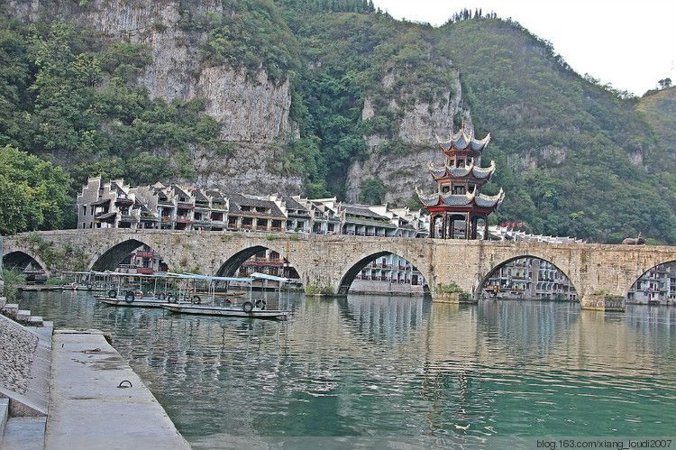
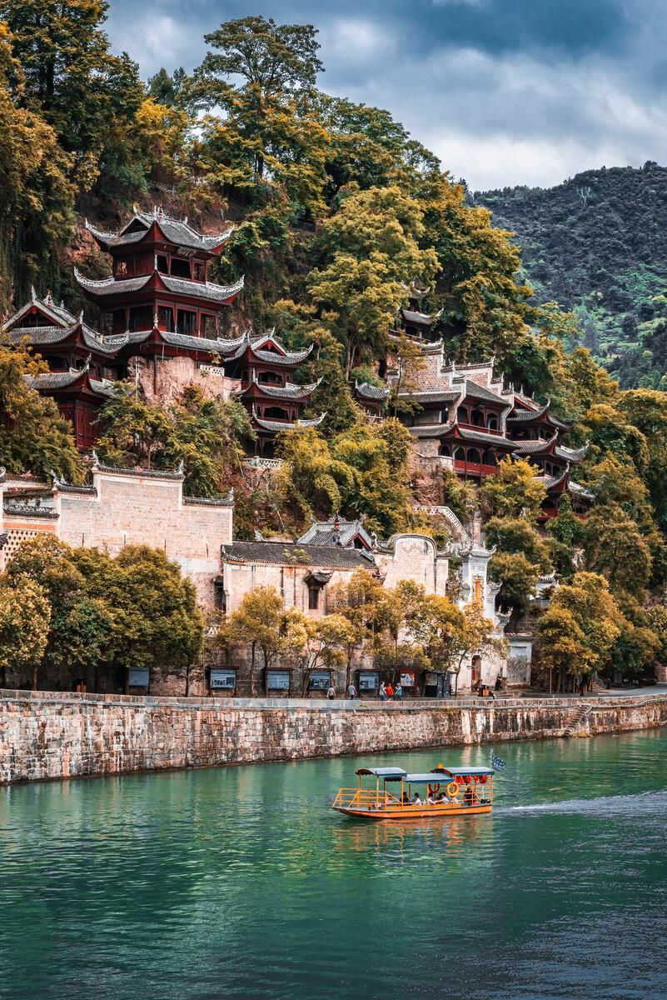
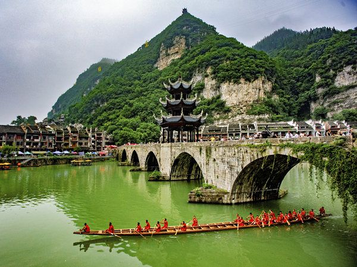
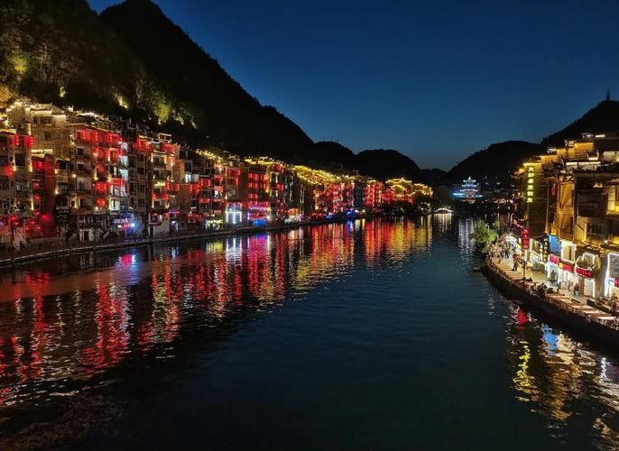

① 一分钟看懂 Zhenyuan
中国贵州 · 黔东南州镇远县
🎫 城区 0 元
🌉 夜景 20:00 后
🛶 端午龙舟有名
🛡 依山沿河多台阶
一句话：有两千余年建城史的国家历史文化名城，舞阳河呈 S 形穿城而过，形成"九山抱一水、一水分两城"的太极古镇，以祝圣桥、青龙洞古建筑群、古巷与夜色闻名。
🚗怎么去 & 住哪
- 高铁：沪昆高铁有 镇远站（县城）与 凯里南站，从镇远站打车/公交 10–15 分钟即到古城。
- 火车/飞机：可先飞 贵阳或 凯里再转高铁；坐普通列车到镇远站离古城更近。
- 古城内：核心区不大，全程步行即可；舞阳河两岸有观光步道与游船码头。
- 住宿：临河客栈看夜景最舒服（尽量选祝圣桥—大桥一带）；想安静可住古镇里巷内民宿，旺季周日—周五相对好订。
🥾经典路线（一日·两日）
- 一日精华：祝圣桥 → 青龙洞古建筑群 → 古巷道（冲子口/仁寿宫巷）→ 石屏山俯瞰全城 → 傍晚河畔美食 → 入夜舞阳河夜景。
- 两日慢游：D1 古城核心＋青龙洞＋石屏山；D2 乘船游舞阳河（或去青龙洞背后的铁溪/高过河方向），回程逛博物馆与非遗手作。
- 拍照点位：祝圣桥中央、青龙洞下方河岸、石屏山顶、两岸吊脚楼对望视角——晨雾与月色效果尤佳。
- 游船：夜游舞阳河是招牌，船行水面看两岸灯火倒影，约 40–50 分钟。



🏛️核心看点
- 祝圣桥：横跨舞阳河的多拱古石桥，桥中三层八角凉亭亭亭玉立，是镇远最经典机位。
- 青龙洞古建筑群：依山而建、凌空贴壁的佛道儒古建群，镶嵌于石屏山崖壁，气势奇特。
- 古巷道：冲子口巷、第二巷等青石深巷连接古城与山体，青砖封火山墙、古井老宅错落。
- 石屏山：登顶俯瞰舞阳河太极水系环绕的古城全景，也是看日出的好去处。
- 古码头与舞阳河：沿河吊脚楼、亲水步道与水上人家，尽显水城烟火气。
🌆夜景 & 节庆
| 时段/活动 | 看点 | 建议 |
|---|---|---|
| 入夜 20:00 后 | 两岸吊脚楼、祝圣桥、山体被灯光点亮，河面倒影流光溢彩 | 夜游舞阳河最佳 |
| 端午 6 月左右 | 舞阳河上的龙舟竞渡与祭龙、抢鸭子等民俗 | 节日人潮大，提前订宿 |
| 灯会/节庆 | 春节前后古镇灯会，古街挂满灯笼 | 人文摄影佳期 |
夜景灯光时间随季节微调，出发前可向民宿/官方确认当日开灯时刻。
💰费用预算（参考）
🎫 古城游览
城区街道/古巷免费开放
🏯 青龙洞
门票约 60 元（以官方为准）
⛰️ 石屏山/摆正观
部分观景/点位单独收费约 30–50 元
🛶 夜游船
约 60–100 元/人
🏨 临河客栈
标间约 150–400 元/晚
💡 合计
一日游约 120–300 元（不含住宿）
🍜美食 & 贴士
- 酸汤鱼：黔东南招牌，酸辣开胃，河畔餐厅多半有。
- 道菜/老腊肉、豆腐花：古镇街边小吃地道实惠；还可试舞阳河鱼、豆花烤鱼。
- 依山沿河多台阶：穿舒适平底鞋，逛古巷爬石屏山省力。
- 夜游注意安全：看夜景沿亲水平台走，河岸无栏处不要翻越或饮酒涉水。
- 旺季订宿带早：端午、国庆与暑期临河房紧张，建议提前预订。